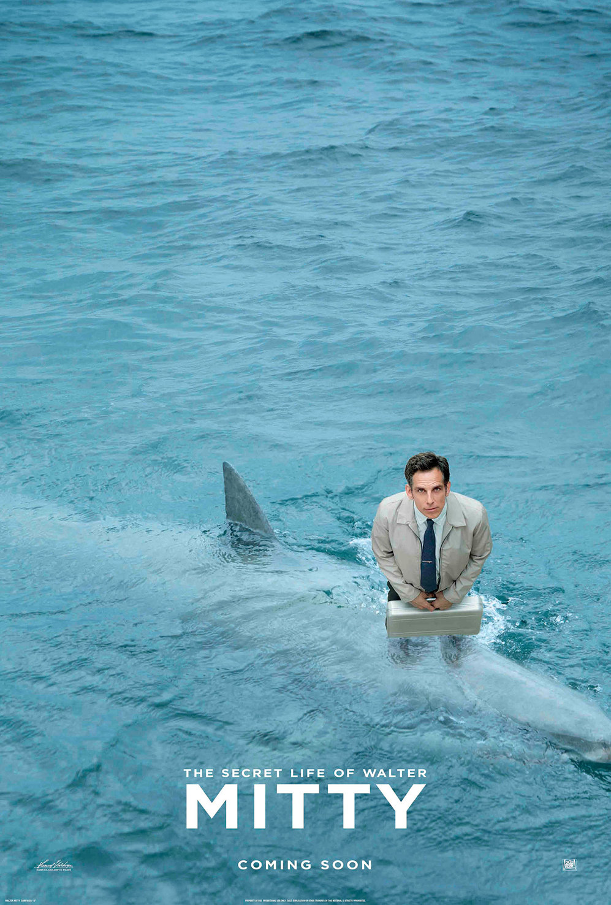

The Secret Life of Walter Mitty
The manager of the negative-assets sector of Life magazine, Walter Mitty, has been working for 16 years for the magazine and has a tedious life, not going anywhere but to and from work. He is an escapist, daydreaming into a fantasy world many times a day. Walter has a crush on recently-hired Cheryl Melhoff but he is too shy to invite her out and he is trying to contact her via online dating. The magazine is preparing to release its last printed edition and the loathsome manager of transition Ted Hendricks is preparing an inevitable downsizing over the next few days. Walter has been the liaison between the magazine and the mysterious independent photographer Sean O'Connell, who has sent to him a package of negatives and a wallet as a gift for his work. Sean also suggests to the senior management the use of negative 25 for the cover of the last edition. However, Walter cannot find the missing negative. Walter has no means to contact Sean and finds a clue that he might be in Greenland. He decides to travel to Greenland to track Sean down in the beginning of an unbelievable adventure.